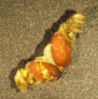

Larval Disease & Get Cure

Baculoviruses
Treatment :
Larvae that have Baculoviruses diseases require immediate attention before the disease takes
over.
- Thoroughly dissect all species to prevent viral infections. Separate healthy larvae from
the sick larvae.
- Clean the larval cabinet regularly. Transfer away to the safest cabinet like a
new place for propagation.
- Heat the former cabinet of the larvae.